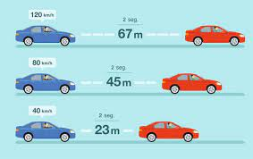

Alguna vez se han puesto a pensar en cómo podría haber una solución para prevenir que sucedan accidentes. Por suerte la física podría tener una solución, y eso nos lleva a ¿Como aplica la física en los accidentes automotrices? La respuesta es que puede aplicar calculando la distancia de frenado con la formula siguiente= velocidad terminal - velocidad inicial / entre A es igual a la velocidad de frenado. Esta fórmula se puede utilizar para poder averiguar aproximadamente si hay oportunidad de que el vehículo alcance a prevenir el choque frenando.
Formulas que podemos aplicar
Velocidad: V=D/T
Velocidad al cuadrado: (V)*(V)
Distancia de frenado: D=v´2/2(g)
Fuerza (N): F=M*A
